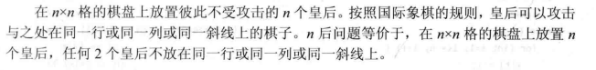

算法分析与设计编程题 回溯法
装载问题
题目描述
解题代码
递归回溯
1 | // goods[i]表示货物i的重量, c1,c2分别表示货船1和货船2的载重量 |
状态压缩
事实上，对于此类涉及选或不选的回溯算法，还可以将其写成迭代的形式。
由于递归回溯的本质可以看作是对一棵二叉树进行的搜索，每次选或者不选都将产生两个分支，那么所有情况的数量为 2n（n 为被搜索对象的数目，在本例中为货物的总数）。我们考虑用一个整数 mask 将每种情况表示出来，该整数称为掩码，关注它的 n 位二进制形式，其中 mask 的第 i 位二进制位就代表对应的货物 goods[i] 有没有被选择，通常用 1 代表被选择，0 代表不被选择。那么不难得知 mask 的范围为 0~2n-1 。
在得到了每一种情况下的掩码后，就需要对其进行解码了，可以遍历 0~n-1 的所有整数 i，并将其右移 i 位，将 goods[i] 的对应的二进制位移到了最低位，此时再将和 1 进行按位与运算就能得知此情况下货物 i 是否被选择。
两种算法都有 2n 中搜索状态，每种状态下需要 O(n) 时间来进行最优解的更新，因此两种算法的渐进时间复杂度都为 O(n * 2n).
1 | vector<vector<int>> optimalLoading(vector<int>& goods, int c1, int c2) { |
批处理作业调度
题目描述
解题代码
1 | int batchJobScheduling(vector<vector<int>>& jobs) { |
符号三角形问题
题目描述
解题代码
1 | int signedTriangle(int n) { |
N皇后
题目描述

解题代码
1 | vector<vector<string>> solveNQueens(int n) { |
最大团问题
题目描述
解题代码
1 | // 图的邻接矩阵形式 |
图的m着色问题
题目描述
解题代码
1 | // 图的邻接矩阵形式 |
圆排列问题
题目描述
解题代码
1 | double circlePermutation(vector<double>& radius) { |
本博客所有文章除特别声明外，均采用 CC BY-NC-SA 4.0 许可协议。转载请注明来源 PageFault！
 微信
微信 支付宝
支付宝
相关推荐

2023-02-26
LeetCode周赛总结 第334场
左右元素和的差值题目链接左右元素和的差值 解题思路直接按照题目要求模拟即可，两次遍历求出 leftSum 和 rightSum，再计算得出 answer. 解题代码12345678910111213141516171819class Solution {public: vector<int> leftRigthDifference(vector<int>& nums) { int n = nums.size(); vector<int> leftSum(n, 0); for (int i = 0; i < n - 1; ++i) { leftSum[i + 1] = leftSum[i] + nums[i]; } vector<int> rightSum(n, 0); for (int i = n - 1; i > 0; --i) { ...

2023-02-19
LeetCode周赛总结 第333场
合并两个二维数组 - 求和法题目链接合并两个二维数组 - 求和法 解题思路本题较为基础，可以直接分别遍历两数组，再用哈希表记录两数组中各编号的累加和，但该方法比较消耗空间，时间上的性能也不理想。 考虑到数组 nums1 和 nums2 都包含互不相同的 id，并按 id 以递增顺序排列，因此想到利用归并排序的思想，设立双指针 p1 和 p2，若两指针所指数组元素的 id 相同，则将 { nums1[p1][0], nums1[p1][1] + nums2[p2][1] } 进行归并，否则将较小 id 的元素（假设 p1 所指元素 id 更小） { nums1[p1][0], nums1[p1][1] } 进行归并。 解题代码12345678910111213141516171819202122232425262728293031class Solution {public: vector<vector<int>> mergeArrays(vector<vector<int>>& nums1, vector&l...

2023-01-08
LeetCode周赛总结 第327场
由于考研等因素的影响，已经时隔一年没有参加力扣周赛了，长时间没有好好琢磨算法题，思维敏捷度确实有所下降，好在这次周赛前两题都没有什么难度，但第三题却把简单问题想复杂了，第四题就基本上都没怎么读题了。。。 正整数和负整数的最大计数题目链接正整数和负整数的最大计数 解题思路直接依照题意统计该数组中正整数和负整数的个数，然后返回较大个数即可，送分题。 解题代码123456789101112131415class Solution {public: int maximumCount(vector<int>& nums) { int cnt1 = 0, cnt2 = 0; for (int i = 0; i < nums.size(); ++i) { if (nums[i] > 0) { ++cnt1; } else if (nums[i] < 0) { ...

2023-08-15
数据结构编程题 图
图定义邻接表1234567891011121314struct ArcNode { // 边结点 int verIdx, weight; ArcNode* next; ArcNode(int verIdx, int weight, ArcNode* next) : verIdx(verIdx), weight(weight), next(next) {}};struct VNode { // 顶点结点 char vertex; ArcNode* first;};struct AlGraph { vector<VNode> VNodes;}; 邻接矩阵1234struct MGraph { vector<char> vertices; // 顶点集 vector<vector<int>> edges; // 邻接矩阵}; 邻接表转邻接矩阵题目描述写出从图的邻接表转化为邻接矩阵的算法。 解题代码1234567891011121314151...

2023-07-17
数据结构编程题 栈和队列
判断合法序列题目描述假设 I 和 O 分别表示入栈和出栈操作，栈的初态和终态均为空，入栈和出栈的操作序列可表示为仅由 I 和 O 组成的序列，可以操作的序列称为合法序列，否则称为非法序列。编写一个算法，判定所给的序列是否合法。若合法，返回 true，否则返回 false. 解题代码123456789101112131415bool isLegalSequence(const string& sequence) { int iCnt = 0; for (int i = 0; i < sequence.size(); ++i) { if (sequence[i] == 'I') { ++iCnt; } else { --iCnt; } if (iCnt < 0) { return false; } &...

2022-01-16
LeetCode周赛总结 第276场
本次周赛相对比较简单，前三题花的时间比较短，但无奈最后一题还是没思路。。。 将字符串拆分成若干长度为 k 的组题目链接将字符串拆分成若干长度为 k 的组 解题思路遍历字符串 s 的每个字符并加入到一个临时字符串中，当此临时字符串长度为 k 时，加入到结果数组中并清空此字符串。若此时遍历到字符串的最后一个字符且此时临时字符串长度没有达到 k 时，则向其末尾填入字符 fill 直到临时字符串长度达到 k，再加入到结果数组中。 解题代码123456789101112131415161718192021class Solution {public: vector<string> divideString(string s, int k, char fill) { vector<string> res; string newStr; for (int i = 0; i < s.size(); i++) { newStr += s[i]; i...